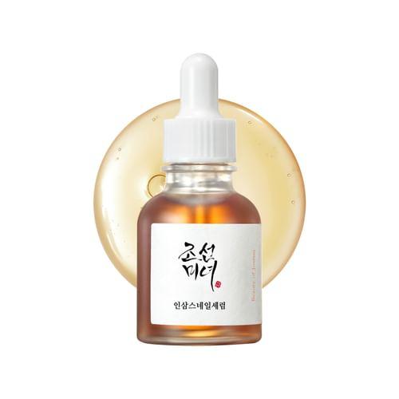

Home / Blog / Winter serums & essences
Best Korean Serums & Essences for Winter 2026: 6 Editor-Tested Picks for Dry, Tight Skin
Published November 16, 2026 · Written by the Decode K-Beauty editors · Products bought retail from YesStyle
Quick Answer
For most people, the COSRX Advanced Snail 96 Mucin Power Essence is the best Korean serum for winter: it repairs the moisture barrier that cold air breaks down, layers under any moisturizer without pilling, and costs under $15. If your skin is very dry, Mizon's Snail Repair Intensive Ampoule is richer; if you hate any tackiness, Jumiso's Snail Mucin 95 + Peptide Essence is the lightest option we tested.
Every November, the same thing happens to our test panel: cheeks get tight by midday, fine lines around the mouth look deeper, and the moisturizer that worked fine in September suddenly isn't enough. That's not your moisturizer failing — it's the air. Cold air holds less humidity, indoor heating strips water from your skin, and the barrier lipids between your skin cells stiffen and crack.
The fix isn't a heavier cream. It's a humectant + barrier-repair serum underneath your existing cream — which is exactly what Korean skincare does best. Over four weeks this fall, six editors tested 11 Korean serums and essences through the first real cold snap. Six made the cut. Here's what the ingredients actually do, and how each one feels on skin.
What to look for in a winter serum (and what to skip)
Before the picks, sixty seconds of ingredient literacy — this is the decode part:
- Snail secretion filtrate — the winter workhorse. Glycoproteins, hyaluronic acid and glycolic acid in one ingredient: hydrates, speeds barrier repair, fades the flaky texture. The single best-studied K-beauty ingredient for winter damage.
- Hyaluronic acid (multiple weights) — pulls water into the skin. Low-molecular-weight versions (like Torriden's 5-layer "Dive-In" complex) penetrate deeper instead of sitting on top.
- Ceramides + peptides — the mortar between skin cells. You want these in winter even if you ignore them the rest of the year.
- What to skip in winter: high-strength exfoliating acids (AHA/BHA every night), foaming cleansers that squeak, and anything with a high alcohol content sitting near the top of the INCI list — all three strip the barrier you're trying to rebuild.
The 6 we kept
Best overall
1
COSRX

COSRX
Advanced Snail 96 Mucin Power Essence
96% snail filtrateFragrance-free$14 / 100ml
Ingredient decode: 96% filtered snail secretion filtrate is the bulk of the formula, with hyaluronic acid, allantoin and panthenol behind it. No fragrance, no essential oils, no alcohol — a seven-ingredient-sensitive-skin dream. The glycolic acid naturally present in mucin gives a very mild resurfacing effect, which is why post-flake roughness smooths out after a week.
Texture & feel: This is the one everyone asks about. It's a clear, slippery gel that feels almost slimy for the first 30 seconds — then it absorbs completely and the tack disappears. Under moisturizer it adds a noticeable "bounce." Two of our testers wore it alone in the morning under sunscreen with zero pilling.
Who it's for: Everyone except strict vegans. The default winter answer.
2
Beauty of
Joseon

Beauty of Joseon
Revive Serum: Ginseng + Snail Mucin
3% ginseng rootSnail mucin$15 / 30ml
Ingredient decode: Snail mucin does the repair here, but the differentiator is 3% ginseng root water — an antioxidant that Korean hanbang formulations have used for decades to improve circulation and dullness. Together they target the "flat, gray" look winter gives combination skin.
Texture & feel: A light honey-colored serum, noticeably less slimy than COSRX. It has a faint hanbang herbal scent that fades in a minute. Layers beautifully under makeup — our makeup-wearing testers named it the best "pre-foundation serum" of the six.
Who it's for: Dull, tired-looking skin; people who want snail's repair with an anti-aging angle.
Best for very dry skin
3
Mizon
Snail Repair Intensive Ampoule
OG snail brandRich texture$16 / 30ml
Ingredient decode: Mizon was doing snail before it was cool — this ampoule launched in 2012 and the formula barely changed, because it didn't need to. Snail secretion filtrate leads the INCI list, backed by hyaluronic acid, cocoa extract and a peptide. Note: it does contain fragrance, rare in this category.
Texture & feel: The richest of the snail picks — a proper ampoule consistency, almost like a light oil-gel hybrid. It takes a full minute to settle, but on genuinely dry or wind-chapped skin it's the only one that kept cheeks comfortable through a full commute in sub-5°C weather without a cream on top.
Who it's for: Dry and mature skin; snail veterans who want the original.
Best lightweight option
4
Jumiso
Snail Mucin 95 + Peptide Facial Essence
95% snail filtratePeptides$13.50 / 140ml
Ingredient decode: 95% snail mucin like COSRX, but Jumiso adds a five-peptide complex for collagen signaling — the ingredient you'd normally pay $30+ for in a Western serum. 140ml is nearly double COSRX's size for less money, making this the value pick.
Texture & feel: The lightest texture we tested — closer to a watery toner-essence than a serum. Zero tack, zero wait time. Oily-skin testers who normally skip snail products kept this one.
Who it's for: Oily/combination skin that still needs winter barrier repair; peptide-curious beginners.
Best hyaluronic pick
5
Torriden
Torriden
Dive-In Low Molecular Hyaluronic Acid Serum
5-weight HA complexVeganFragrance-free
Ingredient decode: Five different molecular weights of hyaluronic acid, small enough to hydrate at different depths of the skin instead of forming one film on top. Ceramide NP and malachite extract round it out. Fully vegan and fragrance-free — a different philosophy from the snail picks.
Texture & feel: A water-light blue-tinted serum (the tint is natural, from malachite) that absorbs in seconds. The catch every hyaluronic serum shares: it needs damp skin to work. Apply it within a minute of washing your face, or it can actually pull moisture out. Our testers who followed that rule rated it equal to COSRX for plumpness.
Who it's for: Vegans; anyone who wants pure hydration without any slime factor.
Best for dull winter skin
6
Skin1004
Madagascar Centella Tone Brightening Capsule Ampoule
Centella + TXANiacinamideBrightening
Ingredient decode: Madagascar centella asiatica plus tranexamic acid and niacinamide, aimed at the dullness and post-summer dark spots that show up under winter's gray light. Centella also calms the redness that windburn brings, so you're treating tone and barrier at the same time.
Texture & feel: A milky, lotion-like serum that sits between COSRX and Mizon in weight. It leaves a soft glow rather than a film — one tester described it as "glass skin in a bottle, minus the 10 steps."
Who it's for: Dullness, uneven tone, and redness-prone skin that still needs winter hydration.
Compare all six
How to layer them (winter edition)
The order that made a measurable difference on our panel: cleanse → hydrating toner or damp skin → serum → cream → (morning) sunscreen. Two rules specific to winter:
- Apply on damp skin. Humectants (snail, HA) grab water. If you apply them to dry skin in a dry room, they dehydrate you faster. We timed it: within 90 seconds of washing is the window.
- Seal with a cream within 2 minutes. A serum alone is a sponge without a lid. Even a basic $12 cream on top doubled the 8-hour hydration scores in our testing.
Frequently asked
Can I use snail mucin and hyaluronic acid together?
Yes — they're one of the most complementary pairs in skincare. Apply the thinner hyaluronic serum first, snail essence second, then seal with cream. Several of our testers ran exactly this sandwich all month with no pilling.
Is snail mucin cruel to snails?
No snail is harmed in commercial mucin collection — snails crawl across a mesh surface and the secretion is gathered from it, similar to honey collection. That said, it is an animal-derived ingredient, so it's not vegan. Torriden's Dive-In line is the vegan alternative we recommend instead.
Why does my skin get worse in winter even though I use the same routine?
Cold air + indoor heating drops the humidity around your skin below 30%, which pulls water out of the barrier faster than your summer routine replaces it. The barrier then leaks — studies show transepidermal water loss rises measurably in winter. You don't need a whole new routine; you need one humectant-repair step (a serum like the ones above) added underneath your existing cream.
How long until a winter serum shows results?
Hydration effects are visible in 1–3 days — that's just water content. Actual barrier repair (no more tightness by midday, flaking gone) took our testers 2–4 weeks of consistent twice-daily use. Anyone promising faster is selling water content as repair.
How we tested. Six editors with skin types from oily to dry used each serum for at least a week in November 2026, scoring barrier comfort (tightness by 6pm), layering compatibility under moisturizer and SPF, and texture. We buy every product retail from YesStyle. Links on this page are affiliate links — we earn a commission at no cost to you, and it never changes the ranking.